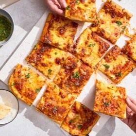

← All recipes
Flaky Puff Crust Pizza

Servings: One 13" x 18" pizza · Prep: 20 mins · Cook: 14 to 18 mins
Ingredients
- Dough
- 4 tablespoons (57g) butter, cold*
- 2 1/2 cups plus 1 tablespoon (300g) King Arthur ‘00’ Pizza Flour or 2 1/2 cups (300g) King Arthur Unbleached All-Purpose Flour
- 2 1/4 teaspoons instant yeast
- 1 1/4 teaspoons (8g) table salt
- 1/2 teaspoon granulated sugar
- 3/4 cup (170g) water, lukewarm (98°F to 110°F)
- 1 tablespoon (12g) extra-virgin olive oil
- 2/3 cup (151g) pizza sauce
- 1/4 cup (25g) Parmesan cheese, grated; plus more for sprinkling
- 8 ounces (227g) mozzarella cheese, shredded; preferably whole milk (about 2 cups)
- 4 ounces (114g) mozzarella cheese, fresh; cubed into 1/4" pieces (about 1 cup)
- Garlic-basil oil*
- 1/4 cup (50g) extra-virgin olive oil
- 2 heaping tablespoons (10g) basil, fresh and minced
- 1/2 to 1 teaspoon lemon juice, to taste
- 1/2 clove garlic, grated
- pinch of table salt
- pinch of red pepper flakes, optional
Directions
- To prepare the butter for lamination: Using the large holes of a box grater, grate the butter onto a sheet of parchment or wax paper in an even layer. Fold the parchment in half to cover the butter, then transfer the packet to the freezer until you’re ready to laminate (at least 30 minutes, or up to several days in advance).
- To make the dough: Weigh your flour; or measure it by gently spooning it into a cup, then sweeping off any excess. In a large bowl, whisk the flour, yeast, salt, and sugar to combine. Add the water and olive oil and stir using a flexible spatula or bowl scraper until a few dry patches of flour remain.
- Knead the dough in the bowl to bring it together, then transfer to a lightly floured work surface and continue to knead, lightly dusting with flour as necessary, to incorporate any dry bits and form a homogenous but craggy dough, 1 to 2 minutes. Cover and set aside to rise at room temperature for 30 minutes. At the end of the rise, the dough will be noticeably puffy but not necessarily doubled in size.
- To laminate the dough: Transfer the risen dough to a lightly floured surface. Use a rolling pin to roll the dough to about 10" x 13" in size (no need to be precise here), with one of the short sides closest to you.
- Working quickly, sprinkle most of the frozen grated butter over the top of the dough, reserving about 1 tablespoon for the next step (return it to the freezer in the meantime). With lightly floured hands, gently press the butter into the dough to adhere. Bring the left third of the dough toward the center, then bring the right side over the top to cover that same section. (This is called a "letter fold.") Pat, press, or gently roll the rectangle to widen it to about 4".
- Distribute the remaining frozen grated butter over the top of the dough and press gently with lightly floured hands to adhere. Bring the top third of the dough toward the center, then bring the bottom third over the top of it. Gently pinch and press the seam together (do not pinch the sides shut), then press the dough packet into a roughly 1"-thick rectangle.
- Flouring as necessary, begin rolling the dough into a large rectangle until it begins to resist (i.e. snaps back). When this happens, pause and cover the dough for 15 minutes.
- While the dough is resting, preheat the oven to 475°F with a rack in the center.
- Uncover the dough and continue to roll until it’s roughly 13" x 18", the size of the Crispiest Crust Pizza Pan or a half-sheet pan. As you roll, bubbles or bits of butter may begin to appear on the surface: pop any bubbles with the tip of a sharp knife or toothpick and dust any buttery spots with flour. If at any point during this process your dough becomes unmanageably warm or sticky, place it on a piece of parchment or a baking sheet, cover, and transfer it to the refrigerator until it firms up, 10 to 15 minutes.
- Transfer the dough to an ungreased 13" x 18" Crispiest Crust Pizza Pan (see "tips," below for alternative pan instructions), and stretch and push it toward the edges. Cover and let the dough rest for 15 minutes.
- Gently push and stretch the dough as necessary so that it touches all edges and corners of the pan; it should reach about halfway up the side walls. Re-cover the dough and let it rest for 15 to 30 more minutes, until the dough is visibly puffy around the edges.
- To top and bake the pizza: Spread the pizza sauce evenly over the surface, getting it nearly to the edges. Sprinkle the Parmesan over the sauce, then evenly distribute the grated mozzarella followed by the cubed mozzarella. (See "tips," below, for guidance on adding additional toppings like pepperoni and vegetables.)
- Bake on the center rack for 15 to 17 minutes, until the cheese is melted and browned in spots; any exposed dough should be golden brown. (Want to avoid large bubbles? Check on the pizza about halfway through baking, and pop any especially big bubbles with the tip of a sharp knife, then continue baking.) While the pizza bakes, prepare the garlic-basil oil.
- To make the garlic-basil oil: In a small bowl, combine all of the ingredients. Set aside until the pizza is done baking.
- Remove the pizza from the oven and use a spatula to unstick any cheese around the edges of the pan.
- To finish the pizza, transfer it to a wire rack (a Giant Spatula is a helpful tool here) and sprinkle with Parmesan. Drizzle about 1 to 2 tablespoons (12g to 25g) of the garlic-basil oil generously over the top. (Reserve the remaining oil for another use.) Let the pizza cool slightly on the rack, 3 to 5 minutes, before slicing and serving. To reheat the leftover pizza, wrap a single layer of slices in an aluminum foil packet. Heat in a 350°F oven until warmed through, about 10 minutes.
Original source: kingarthurbaking.com